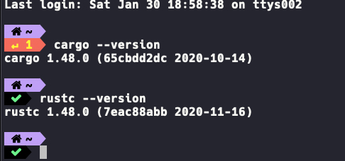

Rust开发环境搭建¶
Rust 语言的环境配置还是相对简单的，因为官方提供了 rustup 这个一步配置工具，rustup 是 Rust 官方推出的基于 终端/控制台/shell 的工具，可用于管理 Rust 版本和相关工具。
Linux和Mac下配置安装环境¶
Linux和Mac上配置环境比较简单，你只需要在你的终端里面执行下面命令即可安装:
curl --proto '=https' --tlsv1.2 -sSf https://sh.rustup.rs | sh
rustc --version即可！

Windows 上安装 Rust¶
Windows 上安装任何语言的开发环境都有一点复杂，Rust 也无法避免这一点，Windows 上运行 Rust 编译器需要 C++ 开发环境,推荐的做法是安装 Visual Studio 2015 或更高的版本，然后你打https://www.rust-lang.org/下载对应文件即可，双击下载好的 rustup-init.exe 文件，选择第1项，然后你就一路下一步，一般情况下，只要静静地等待安装完成即可。
Rust 被安装到目录 C:\Users\{PC}\.cargo\bin 里打开你自己的 C:\Users\{PC}\.cargo\bin 目录，可以看到下面的文件列表。
cargo-fmt.exe
cargo.exe
rls.exe
rust-gdb.exe
rust-lldb.exe
rustc.exe // 这是rust编译器
rustdoc.exe
rustfmt.exe
rustup.exe
关于本站上的讨论组，进来讨论你遇到的问题。
介绍一下rustup¶
rustup是Rust官方的版本管理工具，应当作为安装Rust的首选。因为Rust的更新速度很快，支持的版本很多，有时新版本是不会完美兼容旧版本的，同时还支持多平台交叉编译，所以就有了rustup这个Rust工具链的管理工具。
特 性
- 管理安装多个官方版本的
Rust二进制程序。 - 配置基于目录的
Rust工具链。 - 安装和更新来自
Rust的发布通道:nightly, beta和stable。 - 接收来自发布通道更新的通知。
- 从官方安装历史版本的
nightly工具链。 - 通过指定
stable版本来安装。 - 安装额外的
std用于交叉编译。 - 安装自定义的工具链。
- 独立每个安装的
Cargo metadata。 - 校验下载的
hash值。 - 校验签名 (如果
GPG存在)。 - 断点续传。
- 只依赖
bash, curl和常见unix工具。 - 支持
Linux, OS X, Windows(via MSYS2)。
使用rustup安装的时候，他会帮你安装一下工具:
rustc编译器rust-std标准库cargo包管理工具rust-doc说明文档